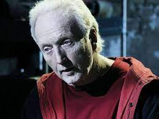
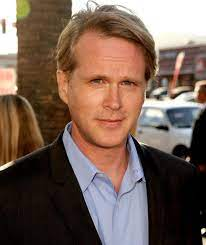

The SAW Movie Series have a total of 9 movies being present in the culture of cinema from 2004 to the present days. However, the movie series of the life and post death of our main character John Kramer also known as "Jigsaw" was meant to be finished by the seventh movie. Brought to the big screen by Lions Gate Entertainment, Twisted Pictures, a division of thriller and horror movies of Evolution Entertainment and Saw Productions Inc. these movies have shocked people all over the world.
This film series has changed the whole perspective of films in this industry by adding the enigma and the whole story behind the horror that we see in the different films presented by the different games created by Jigsaw. Arguably good or bad films, according to their genre, it is indisputable that since the first film, the name SAW has been marked by its reputation as the best horror films ever produced. This is justified by reducing the jumpscares not being at all one of the scariest films within its genre, it can of course be more appealing to the viewer compensating with an immense amount of mystery.
In every movie we are presented with new characters involved in bad conditions such as drug addictions, depression (etc) that are put into a deadly game where they will have to try to survive and pass the game. If not, and as the little puppet said a lot of times, game over! However, for those who survive clearly understand that their lifes have now a purpose and they need to keep going and do something valuable for themselves.
Overall Information
Release Dates
- Saw (2004)
- Saw II (2005)
- Saw III (2006)
- Saw IV (2007)
- Saw V (2008)
- Saw VI (2009)
- Saw The Final Chapter (2010)
- Jigsaw (2017)
- Spiral (2021)
And good news for you, Lionsgate already announced that they are getting everything on set to release the next Saw Movie on the Halloween season of the next year! Check out their Saw Franschise and be ready to play a game!
IMDb Ratings
For you, enthusiasts of cinema that look for the best scored and enjoyed movies, here you can find the best rated movies on IMBd! For those who don't keep track on IMBd scores, every movie is scored from 0 to 10 by people who sign in their website.
- Saw » 7,6
- Saw II » 6,6
- Saw III » 6,2
- Saw VI » 6
- Saw IV » 5,9
- Saw V » 5,8
- Jigsaw » 5,7
- Saw The Final Chapter » 5,5
- Spiral » 5,2
Cast List
Once it would be really hard to mention all the people from the SAW Movies Cast, you can check some of the people that acted on the SAW movie series.
Tobin Bell
Cary Elwes
Michael Emerson

Dina Meyer

Athena Karkanis

Angus Macfadyen

Donnie Wahlberg

Scott Patterson

Costas Mandylor

Chester Bennington

Hannah Emily Anderson

Mandela Van Peebles

Chris Rock

Samuel L. Jackson

Personal opinion
In my opinion, the first films were the best ones due to the surrounding mystery of the main character and his appearance of invulnerability. Throughout the films John Kramer becomes more and more surrounded by danger, trying to pass on his testimony and modus operandi to a possible successor to his work, in my opinion, without success. With the new films, I have lost the sense of enigma and death as an option for the person in the game as a way to fight back and be able to come back to life as the original Jigsaw did. In my eyes as a viewer all future games are designed to kill, sometimes with no exit option losing any sense of message by the person organizing the games.
Click here to play a game!
Go back to top